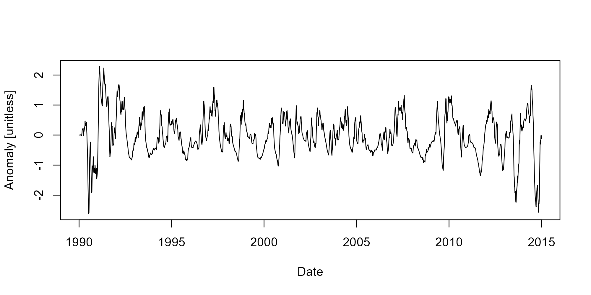

adc provides functions to calculate discharge-based metrics that are useful in water quality concentration and flux regression equations.
Installation
Install adc from CRAN:
install.packages('adc')The development version is available on https://txwri.r-universe.dev/adc and can be installed with:
install.packages('adc', repos = c(txwri = 'https://txwri.r-universe.dev'))Example
Flow anomalies represent how different the current discharge period is (current day, current week, current month, etc.) from previous periods (previous week, previous month, period of record, etc.).
library(adc)
## example code is lavaca and includes dates and mean daily flow
data(lavaca)
x <- fa(lavaca$Flow,
dates = lavaca$Date,
T_1 = "1 month",
T_2 = "1 year",
clean_up = TRUE,
transform = "log10")
plot(lavaca$Date, x, type = "l", xlab = "Date", ylab = "Anomaly [unitless]")
The packages also includes functions to calculate an exponentially weighted discounted flow, base-flow, and rate of change for mean daily streamflow. Functions generally work well using the dplyr::mutate() function to facilitate tidy workflows.